Consider the C Major scale: C D E F G A B (C).
Since this is the C Major scale we call C the "root".
There are seven scale degrees of the major scale before reaching the octave of the root (shown in parentheses).
NNS maps each of these scale degrees to a number like such:

For example, if the lead line of song was "4 5 3 1" this would be played in the key of C as "F G E C".
In this case, selecting an octave to voice the notes would be up to the musician's discretion.
The numbers also apply to the basic chords of a key. Continuing with our C Major example:
nns_chords_chart
In this way we can use numbers to represent the chord with its root on a particular scale degree in the desired key.
For instance, to play the 4 chord in the key of C, one would play the chord that starts on the 4 note of the
C Major scale (F) resulting in an F Major chord.
Note in the table above a minus sign (-) next to the chord indicates a minor chord.
NNS can also be used to denote inversions of a chord.
The following chart contains the 7 most common chords used in a huge variety of modern Pop, Country, and Rock music.
nns_common_chords_chart
The slash (/) denotes a chord inversion.
The number under the slash indicates the bass voicing.
In the table above there are two inversions.
The first is the 1/3 chord.
This is a 1 chord with a bass voicing of 3.
In the key of C that equates to a C Major chord with an E note as the root.
On the bass guitar, only an 3 (E) note would be played for this inversion.
The same principle is applied to the 5/7 chord.
In C this is G Major with a B root or bass voicing.
Bass guitar only plays the 7 (B) note.
All of the above concepts are applied to any musical key.
This is what makes NNS such a great tool for transposing music.
The numbers are applied to the scale degrees of any major key in exactly the same way.
nns_any_key_chart
In this way an NNS chart can easily be read as long as the key is stated.